Hier sind die 120 neuesten von 2.288 Materialien. Alle im Material-Finder ansehen

Der Nistkasten – ein Zuhause für Meisen bauen – Lesespurgeschichte mit Rätselaufgaben (Klasse 5)

Vom Feld in den Laden – der Weg des Apfels – Lesespurgeschichte mit Rätselaufgaben (Klasse 5)

Essen verbindet – Speiseregeln und Fasten in den Religionen – Lesespurgeschichte mit Rätselaufgaben (Klasse 5)

Feste der Weltreligionen – Lesespurgeschichte mit Rätselaufgaben (Klasse 5)

Die Wahl in der Klasse – Lesespurgeschichte mit Rätselaufgaben (Klasse 5)
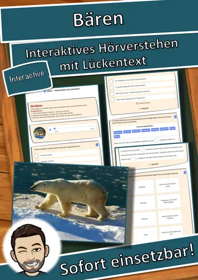
Bären – Hörverstehen mit Lückentext (interaktiv)

Butterfahrt – Hörverstehen mit Lückentext (interaktiv)

Burgund – Hörverstehen mit Lückentext (interaktiv)

Burgenland – Hörverstehen mit Lückentext (interaktiv)

Bunker – Hörverstehen mit Lückentext (interaktiv)

Bundestagswahl 2025 – Hörverstehen mit Lückentext (interaktiv)

Bumerang – Hörverstehen mit Lückentext (interaktiv)

Buddha – Hörverstehen mit Lückentext (interaktiv)

Buckingham Palace – Hörverstehen mit Lückentext (interaktiv)

Buckelwal – Hörverstehen mit Lückentext (interaktiv)

Buchen – Hörverstehen mit Lückentext (interaktiv)

Brüssel – Hörverstehen mit Lückentext (interaktiv)

Zypern – Hörverstehen mit Lückentext (interaktiv)

Bretagne – Hörverstehen mit Lückentext (interaktiv)
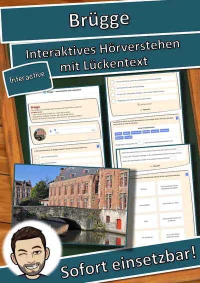
Brügge – Hörverstehen mit Lückentext (interaktiv)
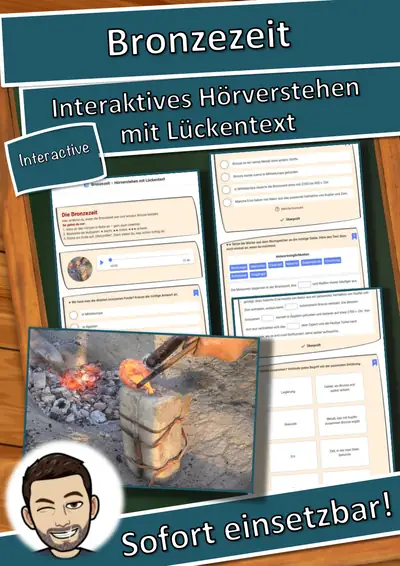
Bronzezeit – Hörverstehen mit Lückentext (interaktiv)

Bregenz – Hörverstehen mit Lückentext (interaktiv)

Braunbär – Hörverstehen mit Lückentext (interaktiv)

Bratwurst – Hörverstehen mit Lückentext (interaktiv)
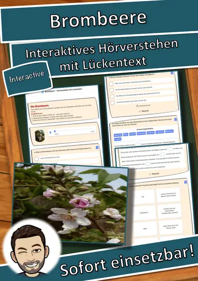
Brombeere – Hörverstehen mit Lückentext (interaktiv)

Brezel – Hörverstehen mit Lückentext (interaktiv)

Brandenburg an der Havel – Hörverstehen mit Lückentext (interaktiv)

Bozen – Hörverstehen mit Lückentext (interaktiv)

Boxer (Hund) – Hörverstehen mit Lückentext (interaktiv)
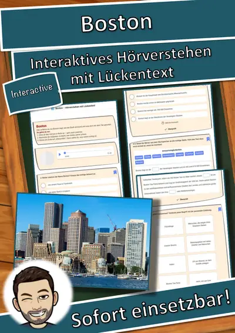
Boston – Hörverstehen mit Lückentext (interaktiv)

Brennnessel – Hörverstehen mit Lückentext (interaktiv)

Bremsen (Insekten) – Hörverstehen mit Lückentext (interaktiv)

Bosnien und Herzegowina – Hörverstehen mit Lückentext (interaktiv)

Borkum – Hörverstehen mit Lückentext (interaktiv)

Borkenkäfer – Hörverstehen mit Lückentext (interaktiv)

Braunschweig – Hörverstehen mit Lückentext (interaktiv)

Bolivien – Hörverstehen mit Lückentext (interaktiv)

Bochum – Hörverstehen mit Lückentext (interaktiv)

Blut – Hörverstehen mit Lückentext (interaktiv)

Blindschleiche – Hörverstehen mit Lückentext (interaktiv)

Blätterteig – Hörverstehen mit Lückentext (interaktiv)

Bisamratte – Hörverstehen mit Lückentext (interaktiv)

Birmingham – Hörverstehen mit Lückentext (interaktiv)

Beherrschung des Feuers Lückentext mit Wortspeicher Hörverstehen und Suchsel

Berufsschule – Hörverstehen mit Lückentext (interaktiv)

Bernstein – Hörverstehen mit Lückentext (interaktiv)

Bern (Stadt) – Hörverstehen mit Lückentext (interaktiv)
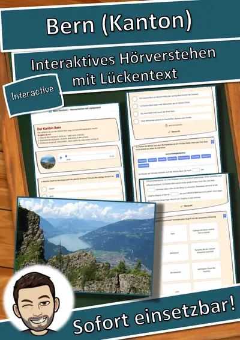
Bern (Kanton) – Hörverstehen mit Lückentext (interaktiv)
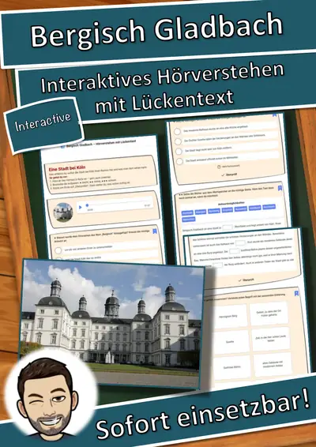
Bergisch Gladbach – Hörverstehen mit Lückentext (interaktiv)

Berliner Mauer – Hörverstehen mit Lückentext (interaktiv)

Berliner Dom – Hörverstehen mit Lückentext (interaktiv)
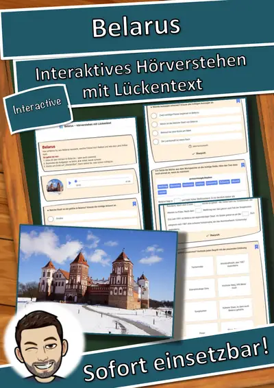
Belarus – Hörverstehen mit Lückentext (interaktiv)
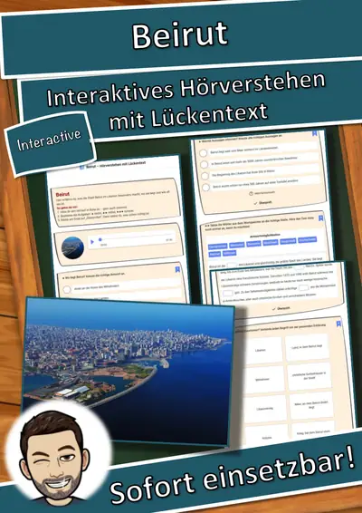
Beirut – Hörverstehen mit Lückentext (interaktiv)

Bayreuth – Hörverstehen mit Lückentext (interaktiv)
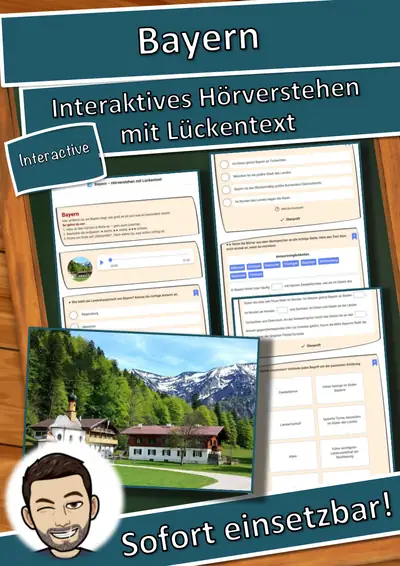
Bayern – Hörverstehen mit Lückentext (interaktiv)

Basilikum – Hörverstehen mit Lückentext (interaktiv)

Basel – Hörverstehen mit Lückentext (interaktiv)

Barsche – Hörverstehen mit Lückentext (interaktiv)

Bangladesch – Hörverstehen mit Lückentext (interaktiv)

Bamberg – Hörverstehen mit Lückentext (interaktiv)

Ballaststoffe – Hörverstehen mit Lückentext (interaktiv)

Baku – Hörverstehen mit Lückentext (interaktiv)

Baby-Talk Lückentext mit Wortspeicher Hörverstehen und Suchsel

Baikalsee – Hörverstehen mit Lückentext (interaktiv)
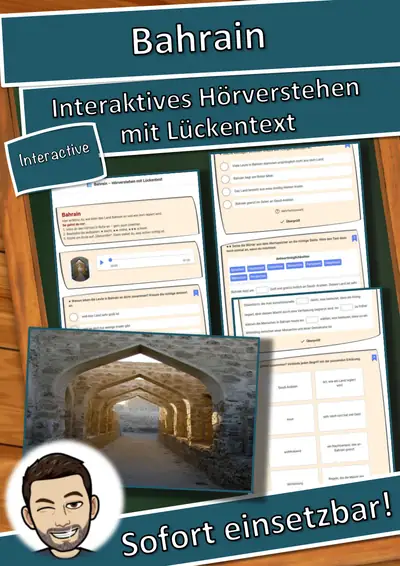
Bahrain – Hörverstehen mit Lückentext (interaktiv)
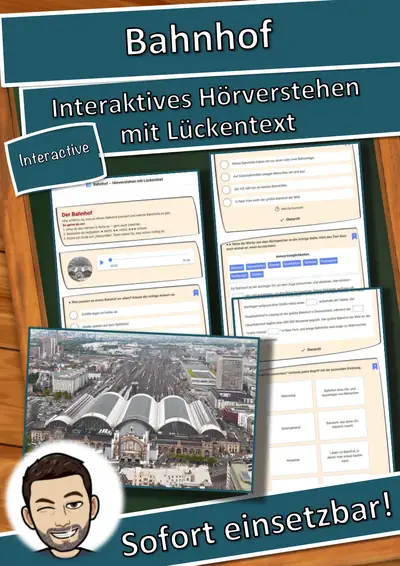
Bahnhof – Hörverstehen mit Lückentext (interaktiv)
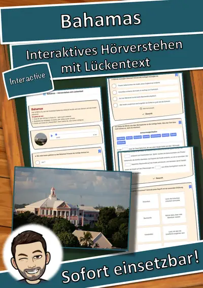
Bahamas – Hörverstehen mit Lückentext (interaktiv)

Bagdad – Hörverstehen mit Lückentext (interaktiv)
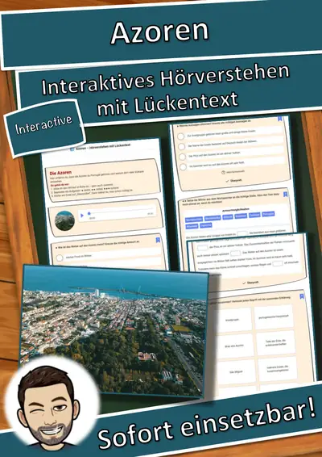
Azoren – Hörverstehen mit Lückentext (interaktiv)
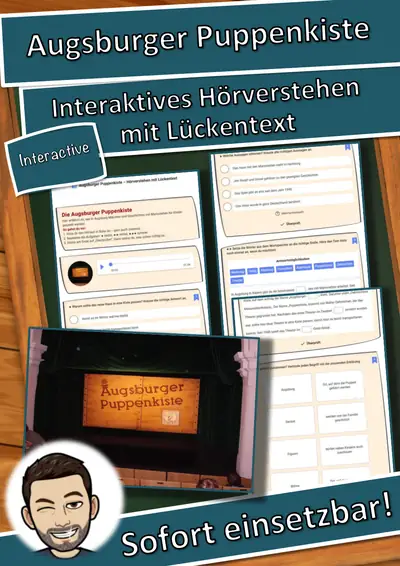
Augsburger Puppenkiste – Hörverstehen mit Lückentext (interaktiv)

Atomenergie – Hörverstehen mit Lückentext (interaktiv)

Astana – Hörverstehen mit Lückentext (interaktiv)

Aserbaidschan – Hörverstehen mit Lückentext (interaktiv)

Aschenputtel – Hörverstehen mit Lückentext (interaktiv)
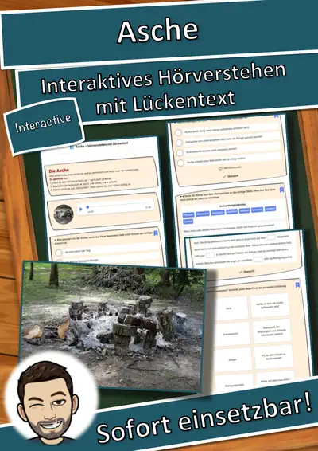
Asche – Hörverstehen mit Lückentext (interaktiv)

Artikelübersicht Vögel – Hörverstehen mit Lückentext (interaktiv)

Artikelübersicht Säugetiere – Hörverstehen mit Lückentext (interaktiv)
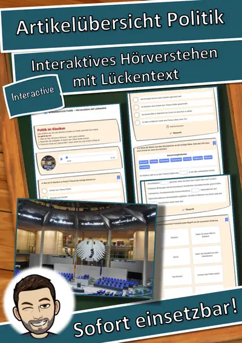
Artikelübersicht Politik – Hörverstehen mit Lückentext (interaktiv)

Armenien – Hörverstehen mit Lückentext (interaktiv)

Armbrust – Hörverstehen mit Lückentext (interaktiv)

Aprikose – Hörverstehen mit Lückentext (interaktiv)
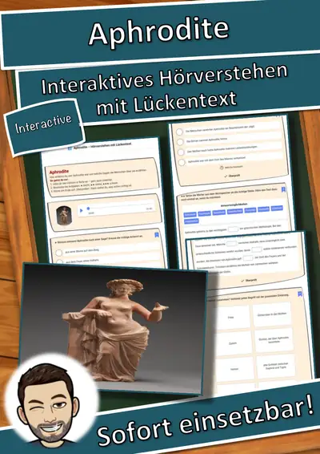
Aphrodite – Hörverstehen mit Lückentext (interaktiv)

Antwerpen – Hörverstehen mit Lückentext (interaktiv)

Antilope – Hörverstehen mit Lückentext (interaktiv)

Angkor Wat – Hörverstehen mit Lückentext (interaktiv)

Andorra la Vella – Hörverstehen mit Lückentext (interaktiv)

Andorra – Hörverstehen mit Lückentext (interaktiv)

Anatomie – Hörverstehen mit Lückentext (interaktiv)

Anakondas – Hörverstehen mit Lückentext (interaktiv)
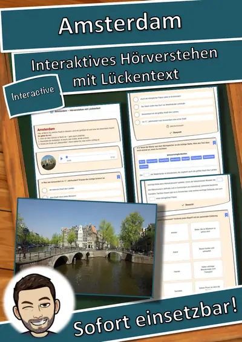
Amsterdam – Hörverstehen mit Lückentext (interaktiv)

Altsteinzeit – Hörverstehen mit Lückentext (interaktiv)

Axolotl – Hörverstehen mit Lückentext (interaktiv)
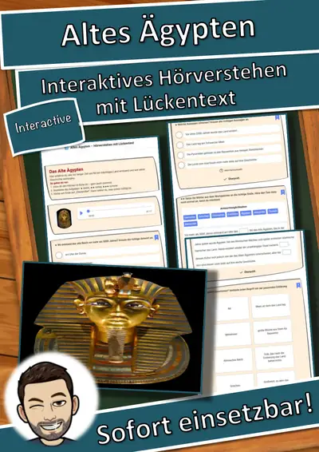
Altes Ägypten – Hörverstehen mit Lückentext (interaktiv)

Altes Griechenland – Hörverstehen mit Lückentext (interaktiv)

Altertum – Hörverstehen mit Lückentext (interaktiv)

Augsburg – Hörverstehen mit Lückentext (interaktiv)

Altai-Gebirge – Hörverstehen mit Lückentext (interaktiv)

Allerheiligen – Hörverstehen mit Lückentext (interaktiv)

Alhambra – Hörverstehen mit Lückentext (interaktiv)

Algerien – Hörverstehen mit Lückentext (interaktiv)

Algarve – Hörverstehen mit Lückentext (interaktiv)

Alcatraz – Hörverstehen mit Lückentext (interaktiv)
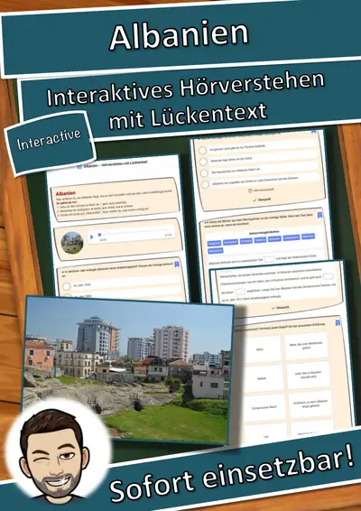
Albanien – Hörverstehen mit Lückentext (interaktiv)
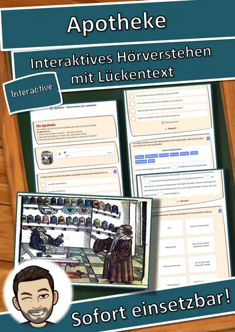
Apotheke – Hörverstehen mit Lückentext (interaktiv)
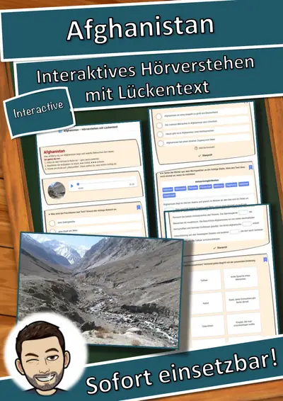
Afghanistan – Hörverstehen mit Lückentext (interaktiv)

Affenbrotbäume – Hörverstehen mit Lückentext (interaktiv)

Absolutismus – Hörverstehen mit Lückentext (interaktiv)

Ameisen – Hörverstehen mit Lückentext (interaktiv)

Acker – Hörverstehen mit Lückentext (interaktiv)

Abendmahl – Hörverstehen mit Lückentext (interaktiv)

Aas – Hörverstehen mit Lückentext (interaktiv)

Aarhus – Hörverstehen mit Lückentext (interaktiv)

Aachener Dom – Hörverstehen mit Lückentext (interaktiv)
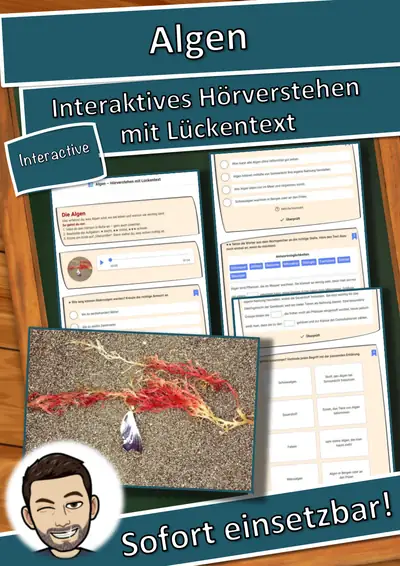
Algen – Hörverstehen mit Lückentext (interaktiv)
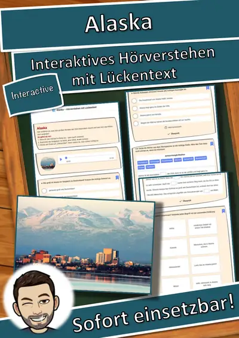
Alaska – Hörverstehen mit Lückentext (interaktiv)

Afrika – Hörverstehen mit Lückentext (interaktiv)

Asteroiden Lückentext mit Wortspeicher Hörverstehen und Suchsel

Aquarellmalerei Lückentext mit Wortspeicher Hörverstehen und Suchsel

Zunge – Hörverstehen mit Lückentext (interaktiv)

Zucker – Hörverstehen mit Lückentext (interaktiv)
Keine Materialien gefunden – versuch einen anderen Suchbegriff oder Filter.